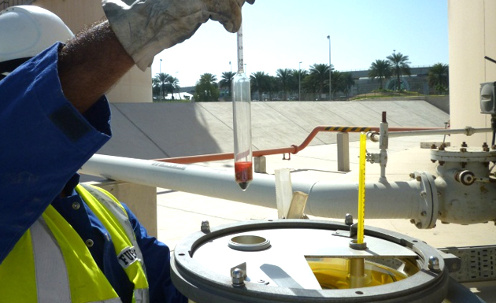
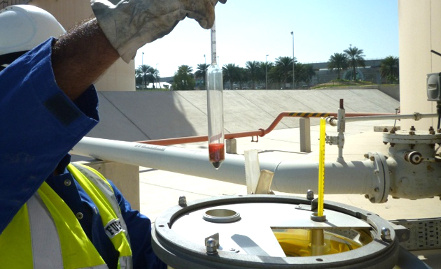
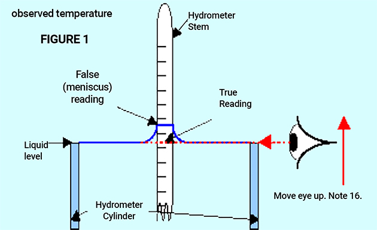
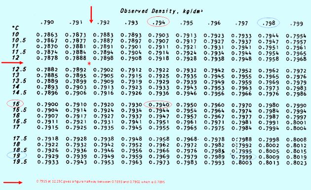

Session 5.2
Density
- Control Check is a visual appearance check plus fuel density determination.
- A control check is done to confirm that no bulk contamination has occurred by comparing the measured density result with the original or expected density of the batch.
- Density variation at standard temperature shall not exceed 3 kg/m3.
- It is used primarily to confirm the general acceptability of the product for receipt after transfer from one location to another by comparing the density determination at 15°C (60°F) as received with that shown on applicable documentation.
- ASTM Table 53B shall be used to obtain the sample density at 15ºC.
- Alternatively, ASTM Table 5B can also be used for the correction of observed API gravity to API gravity at 60ºF.
- Another use is as a component of tank release procedures by comparing the observed density of an Average Sample with the Calculated Theoretical value.
- A density difference greater than 3 kg/m3 or (0.7ºAPI) in any test result indicates possible contamination and shall be investigated and possibly rejected.
Visual Appearance Check Control Check
Chemical Water Detection
Fast Flush
5.2.1 Control Check
 

 (2).png)
- This is a Control Check (CC) plus a Chemical Water Detector test (CWD).
- It is primarily used prior to the release of product where water is not normally expected to be found.
Control Check with Chemical Water Detector Test
- Density is the mass of a unit volume of a material substance. The formula for density is d = M/V, where d is density, M is mass, and V is volume
- Sometimes also referred to as Specific Gravity “SG”
- Jet fuel Specification requirements limits of 775.0 to 840.0 kg/m3 at 15oC
- Density is often expressed in kg/liters, making the Spec. limits 0.7750 to 0.8400
- In the supply chain – density helps in the detection of severe contamination
- For airlines – density is required to define aircraft fuel load
- For airlines – density assists in the prediction of fuel energy content
- Thermometers and hydrometers used for density quality control checks shall meet the requirements of the relevant ASTM/IP standards.
- Copies of documentation confirming compliance with the appropriate standard shall be available at the location.
- The relevant standards are:
- Thermometers: IP 64C/ASTM E1 NO.12C
- Hydrometers: BS 718: 1960
- ( types M50SP and L50SP, density at 15ºC); ASTM E-100
- Pour the sample into a clean, glass Hydrometer Jar, stand on a level surface
- Check Hydrometer is undamaged, datum marks align and weighting is level
- Place Thermometer in Hydrometer jar, stabilize, read temperature to nearest 0.25oC, record reading as ‘Observed temperature’ and remove Thermometer
- Lower Hydrometer gently into Hydrometer Jar, avoid wetting the stem above the anticipated reading
- Gently spin the Hydrometer to avoid sticking to the side of the jar
- Read the Hydrometer, at the point where it penetrates the fuel surface to the nearest 0.0005 kg/l and record this ‘Observed density’
- Remove the Hydrometer and recheck the fuel temperature which should not have changed by more than 0.5 oC, if so repeat the procedure until stabilised
- Convert the Observed Density to a corrected or ‘Standard’ value at 15 oC using ASTM Tables 
- ASTM Table 53B shall be used to obtain the sample density at 15ºC.
- Alternatively, ASTM Table 5B can also be used for the correction of observed API gravity to API gravity at 60ºF. 
5.2.2Measurement of Density
Apparatus
Test Method
NOTE: moving the eye up and down to see the straight line of the liquid level rather than an ellipse of liquid helps find the correct level
Results using ASTM Table